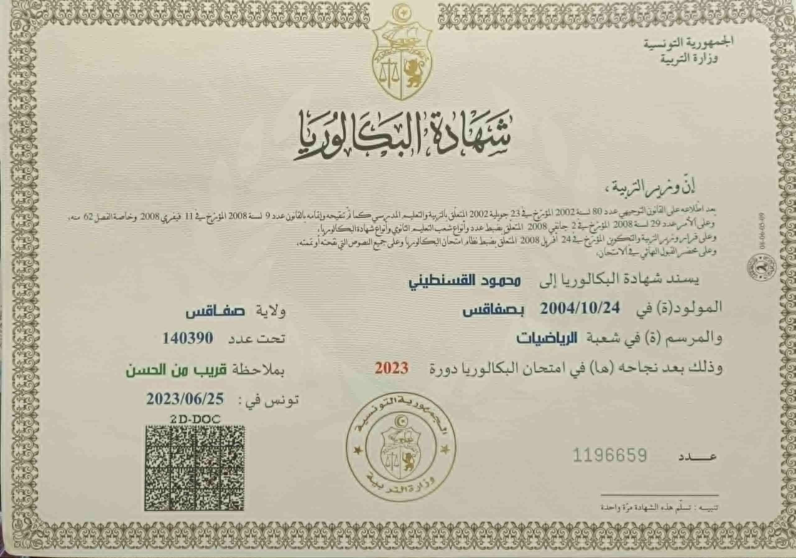

Mon Parcours Académique
Diplômes et certifications obtenus
Baccalauréat en Mathématiques
2023Lycée Hédi Soussi, Sfax
Baccalauréat en mathématiques avec la mention Assez Bien. Fondations solides en mathématiques et sciences.

Classes Préparatoires MP
2023-2025Faculté des Sciences, Sfax
Deux années intensives de préparation en Mathématiques-Physique (MP). Réussite du concours national d'entrée au cycle ingénieur.
Cycle Ingénieur - Génie Logiciel
2025Institut International de Technologie (IIT)
Formation d'ingénieur en Informatique avec spécialisation en Génie Logiciel. Apprentissage des technologies modernes et méthodologies agiles.
Compétences Acquises
Fondamentales
- Mathématiques appliquées
- Math-Physique
- Algorithmique
- Logique mathématique
Techniques
- Programmation (C, Python, JS)
- Web Development (HTML/CSS)
- Bases de Données (SQL)
- Git & Versionning
Professionnelles
- Travail en équipe
- Gestion de projet (Agile)
- Communication technique
- Résolution de problèmes
Certifications & Réalisations
IEEE XTREME 19.0
Compétition internationale de programmation
2025Hackathon - The Descent
Problem Solving & Pitching Challenge
Décembre 2025Oracle OCI AI Foundations
Introduction au Machine Learning
2025-2026Web Development Project
Portfolio Personnel (HTML/CSS/JS)
2025Années d'études
Matières étudiées
Projets réalisés
Passion d'apprendre